The Palace Museum
Contains
A clear entityA recognizable intent
Returns
TicketsHotels nearbyAttractions around it
Maps to a known structure
Not what you typed.What you meant.
Reframing Search from keyword retrieval into a travel decision gateway.
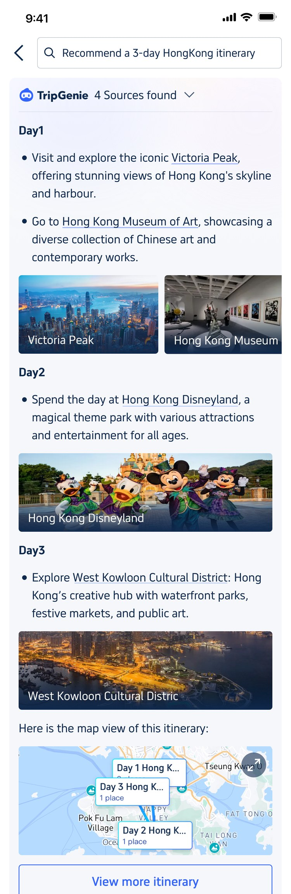
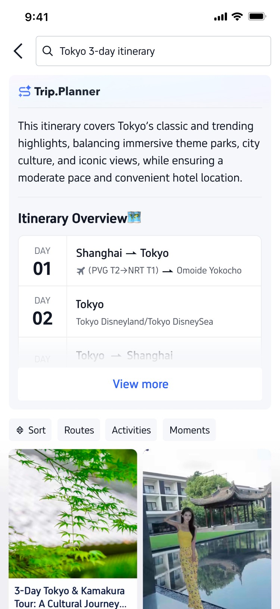
Prologue
From Query Matching to Travel Decisions
Premise
I lead design for Trip.com Search. Before this case begins, I had already rebuilt the intent-driven results pages — around 40% of search traffic — as Match & Inspire: one page doing two jobs, matching the need travelers already express, then inspiring what they might want next.
It worked on every need Search could classify. This case is about the ones it couldn’t.
The ceiling
The remaining 20% of long-tail queries weren’t just longer searches. They carried goals, context, constraints and relationships that no predefined intent could hold.
The Palace Museum
Maps to a known structure
Where should I take my parents this summer?
Maps to no predefined intent
The next frontier wasn’t better matching. It was serving what a results page was never shaped to carry.
The north star
Search shouldn’t just match what travelers express — it should help them shape it, and act on it.
Getting there wasn’t one AI feature. AI opened two directions at once — travelers who say a lot, and travelers who say very little. Serving both raised the question the category still hasn’t settled: everywhere, a system decides when to show a short AI answer, but the person still has to go and pick the deeper mode themselves. Should a traveler have to know which one they need?
Chapter 01 · Explore Intelligent Content (EPIC)
The long queries were already in the log. I hadn’t had a reason to look at them separately until I started asking why the unsolved 20% stayed unsolved.
So I cut results-page traffic by query length. Queries written as full sentences had moved from 6.3% in Q3’23 to 7.8% by Q4’24 — a point and a half in five quarters, rising every quarter in between. A point and a half is not a number that wins a room on its own. What made it arguable was where it came from: travelers were arriving at Trip.com having just asked an LLM something in plain language, and typing the same sentence into our search box out of habit.
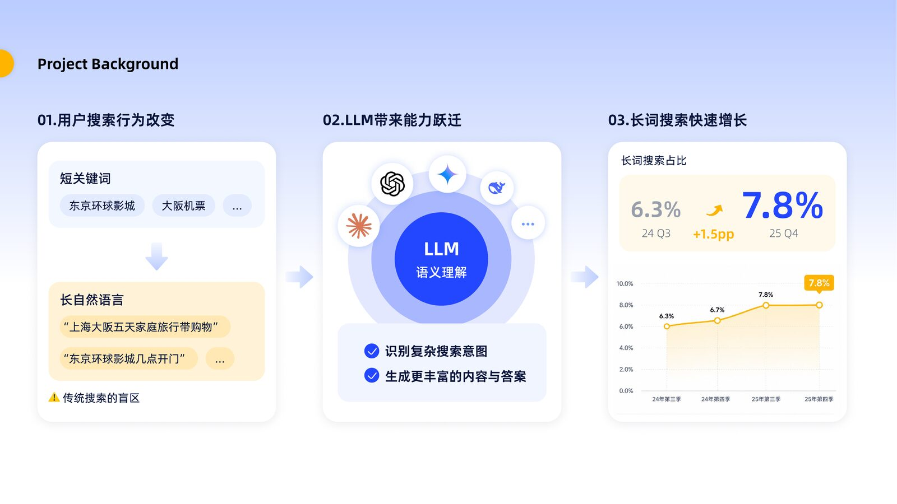
The case I brought to the PM lead: search input is moving from keywords to sentences, LLMs made that shift cheap for users, and the share is climbing. Internal deck slide — to be redrawn in English.
Then I read a few thousand of those queries by hand. They weren’t one behaviour. They sorted into three, and only one of them was what everyone assumed “long-tail” meant.
Transaction, written out
“What five-star hotels are there in Tokyo?”
A filter set expressed as a sentence. Search could serve this once it parsed the constraints out.
Fact lookup
“What time does Universal Studios Japan open?”
One correct answer exists. It sits three taps deep, in a chip row on a detail page.
Open-ended planning
“Shanghai–Osaka, five days, shopping on the last day”
A task with three constraints and an implied order. Retrieval can match the words. It has nothing to return that is the answer.
Keyword retrieval could find results for all three.
It could answer none of them.
I walked both failing cases end to end on my own phone before writing a single frame. The failure looked different each time, and the diagnosis turned out to be the same one.
“What time does Universal Studios Japan open?” returned a normal results page: tickets, guides, user moments. The opening hours were on the page — two levels down, inside the attraction detail, in a row of status chips under the hero image.
Four moves to reach one line of text: scan a mixed feed, guess which card holds the answer, open it, scroll until you find it. Every one of those moves is a place to give up, and the query was a ten-second question.
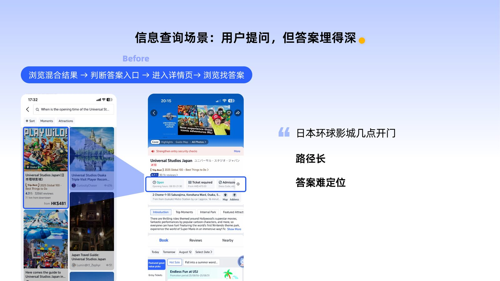
Before: the path from question to answer. Long route, and no signal about which card is carrying the answer. Internal deck slide — English screens to replace.
“Tokyo 5-day 4-night itinerary, shopping on the last day” carries three constraints and a sequence. Search matched Tokyo, 5-day and shopping as separate tokens and returned tours that each satisfied one of them. One tour was explicitly labelled No Shopping.
Nothing in our inventory was the trip this person described. We were handing over raw material and leaving the assembly to them.
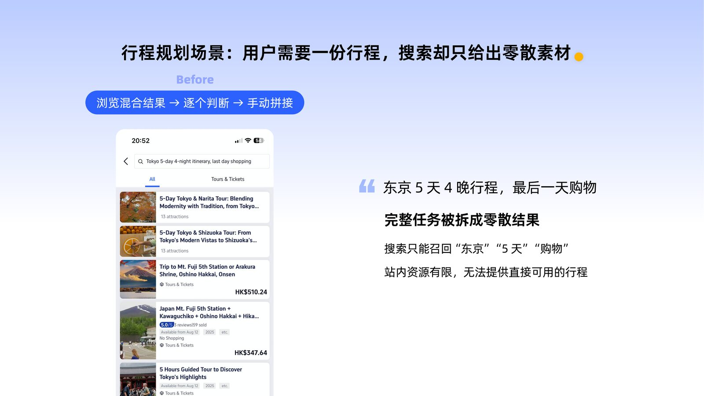
Before: a whole task broken into fragments. The words matched. The trip did not exist. Internal deck slide — English screens to replace.
Both cases pointed at the same thing, and it wasn’t recall quality. Retrieval was working. What the page never did was assemble — read the goal behind the sentence, and organise what we already had into a shape the traveler could use.
If AI can read the goal behind a sentence and organise what we already hold into guidance a traveler can act on, Search can serve the needs a results page was never shaped to carry.
I took that to the PM lead as a proposal rather than a request. It came back with a date attached: one month, closed development, one surface — the comprehensive results page. That became EPIC.
Everything after that was a sequence of arguments about placement, length, control, and who the page belongs to while an AI is talking on it.
There was no settled pattern to copy. The market had split into two camps and neither had been running long enough to call a winner — Google, RED and WeChat were pinning the answer into a fixed-height block above results; Quark and Baidu were letting it stream in place and push the page down as it went.
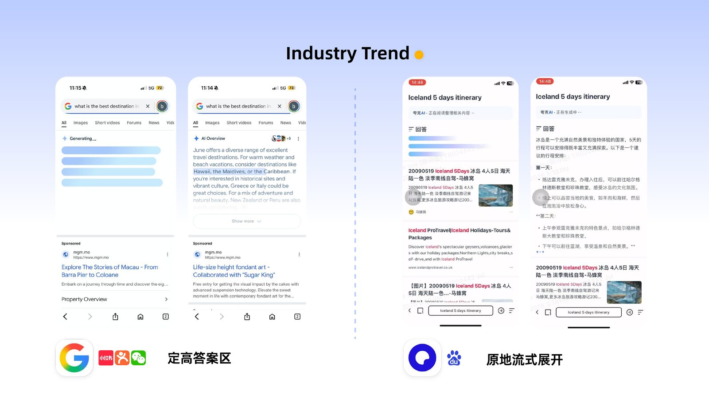
Industry scan, early 2025. Two live answers to the same question, and a reason to pick rather than copy. Internal deck slide.
Decision 01
The comprehensive results page is where transaction happens. Give the whole page to AI and we lose the surface that pays for it. Bolt AI on as one more card in the feed and it becomes ignorable furniture.
What I decided
AI takes position one, as an integration layer — the single slot most likely to hit the intent — and the results feed stays completely intact underneath it. The answer resolves the question; the feed keeps carrying exploration and conversion.
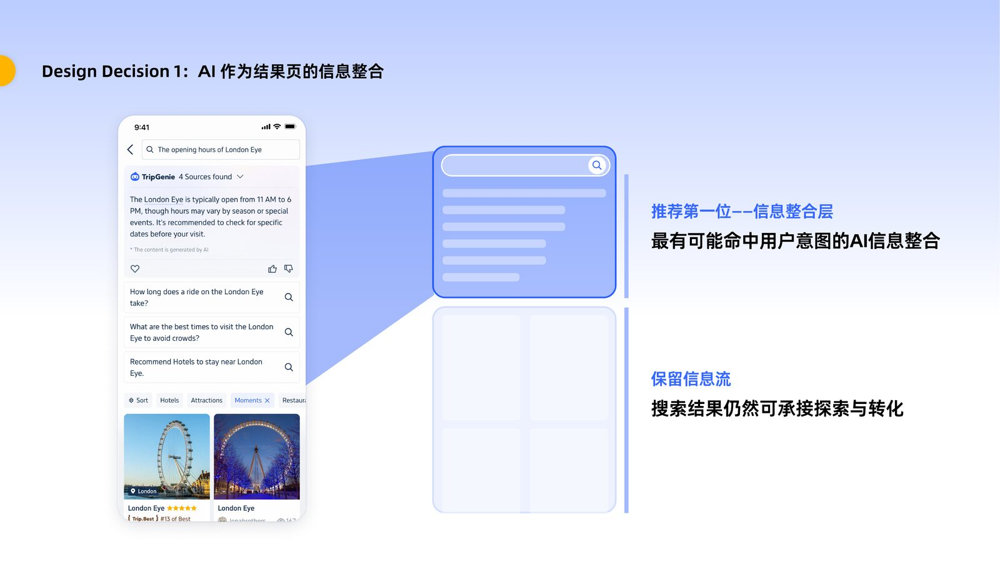
Answer on top, feed untouched below. The page gains a job without losing the one it had. Internal deck slide.
Decision 02
This was the argument that took longest. A fixed-height block is well behaved: the page never moves, engineering loves it, and the feed sits at a predictable scroll depth. Letting the answer run full-length costs all of that.
Fixed-height block
Not takenFull output, in place
ShippedWhat I decided
Full output. A truncated AI answer is worse than no AI answer — the traveler can’t judge whether it was any good, so they have no reason to try it a second time. Completeness is what buys the second use.
That meant accepting a page that jumps while it writes. I took the instability as a design problem to solve rather than a reason to back off, which is what Decision 04 turned into.
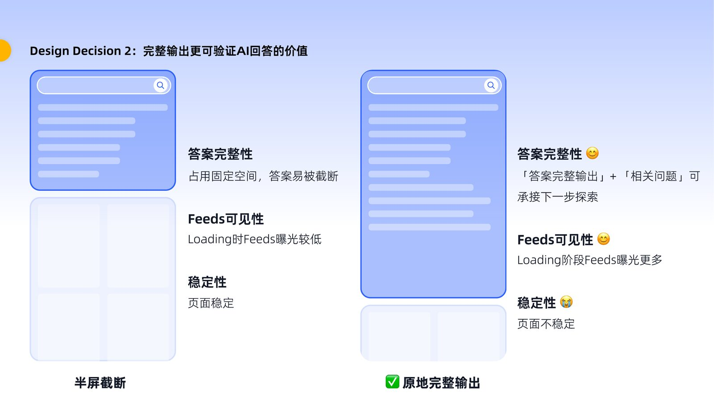
The trade-off laid out for the room, with the cost of the choice stated rather than hidden. Internal deck slide.
Decision 03
Early sessions split cleanly. One group read the answer properly and asked a follow-up. The other scrolled straight past it to the listings, the way they always had. Optimise the layout for either group and you tax the other on every single search.
A toggle would have been the easy answer, and the wrong one. Nobody wants to declare a preference before they know what the answer says.
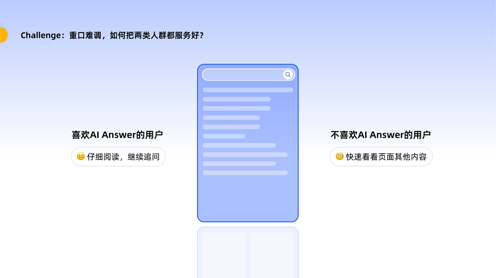
Same page, two opposite reading behaviours. Internal deck slide.
What I decided
Make the choice continuous instead of binary. The AI module condenses into a sticky bar as you scroll down, handing the screen to the feed; scroll back up and it expands again. Either audience gets what it came for, in either direction, without ever selecting a mode.
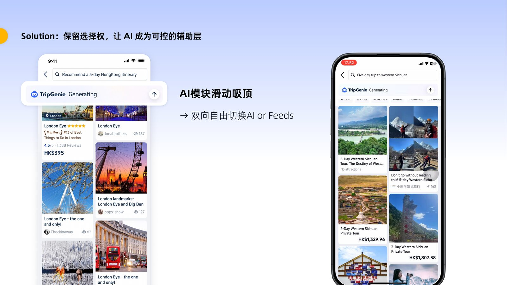
Sticky, reversible, always available. Control stays with the reader. Internal deck slide — a short screen recording would carry this better than a still.
Decision 04
The first build shipped the instability I’d agreed to accept, and it was worse in the hand than on paper. Tokens arrived faster than people scrolled. Content kept inserting above the viewport, and the page slid under the thumb.
I watched a session where someone reached for a card and it moved 200 pixels before the tap landed. They tried twice, then left. That recording ended the argument for me.
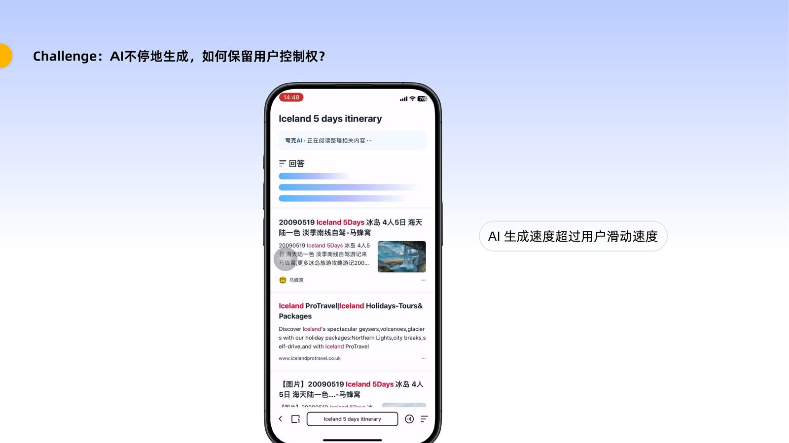
Streaming faster than a human reads is a stability bug wearing a performance costume. Internal deck slide.
What I decided
Touch pauses generation. The instant a finger lands on the page, streaming holds. Lift off, and it resumes where it stopped. The page is guaranteed still at exactly the moment someone is trying to use it, and no speed is lost the rest of the time.
It was the hardest piece to get built — it touched rendering, and the estimate came back as “this will interfere with both modules.” Winning that one took prototyping it myself and sitting with the engineer until the behaviour was obvious. It later became the core claim of an invention patent I filed as lead applicant.
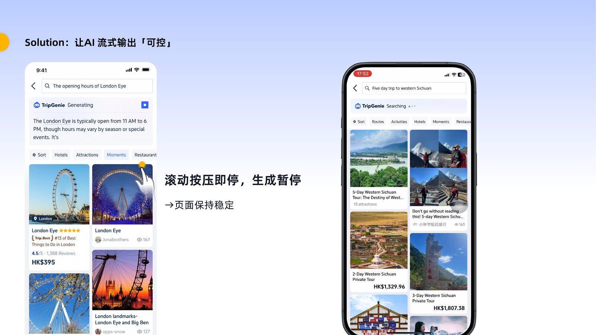
Press to pause, release to resume. Internal deck slide — this one really wants a GIF.
Decision 05
First token took a few seconds. A full planning answer could take close to ninety. On a results page people expect to be instant, that is a very long time to hold someone with a spinner.
What I decided
Stop treating the wait as dead time. The feed renders first and is fully browsable while the answer is still being written — so the loading window costs the traveler nothing, and the AI module announces its state (searching, reading, generating) in place rather than blocking the page behind it.
It also flipped the argument about full-length output: the longer the answer takes, the more feed the traveler sees on the way.
Needs a dedicated asset: the loading-state sequence — searching → reading sources → generating → complete — with the feed live underneath. Currently reusing the sticky-state slide.
Decision 06
The one I only got halfway. A good AI answer is a satisfying dead end: the traveler gets what they asked for and has no particular reason to keep going. On a page whose job is booking, that’s a real cost.
What I decided
Every place the answer names becomes a link into the product for it, and the follow-up questions underneath route back into the feed rather than deeper into chat. The answer is built to end somewhere, not just to end.
It was the right direction and it wasn’t enough, which the numbers said plainly a month later.
A month of closed development, no reference pattern for most of it, and an interaction model that engineering had good reasons to push back on. The work that mattered here was less about frames and more about keeping a direction intact while six people took turns arguing with it.
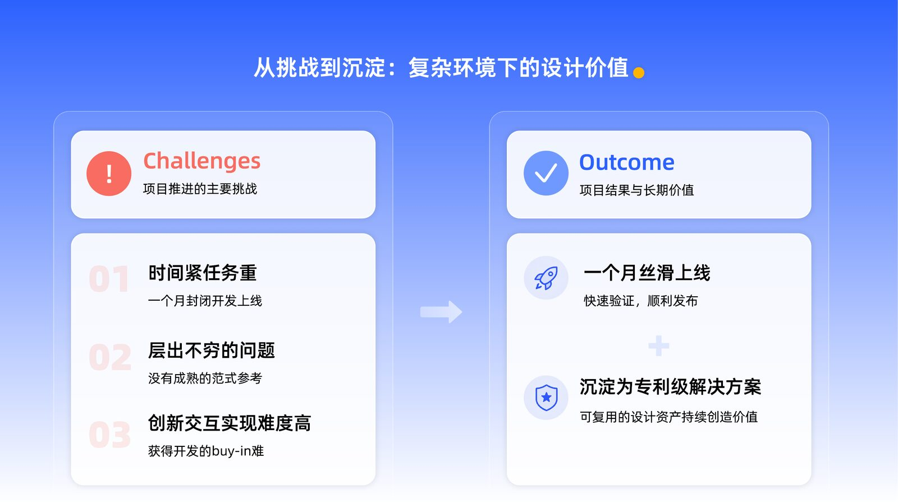
Three constraints, and what came out the other side. Internal deck slide.
It shipped on schedule, and the interaction model outlived the release — it was filed as an invention patent and reused on later AI surfaces instead of being redesigned each time.
Retention moved in the right direction across every window. At EPIC’s own sample size, none of those moves cleared significance on their own — the longer-running AI-on / AI-off experiment is what confirmed the direction was real.
+5.04%
Day-3 retention
37.3% base · Day-1 +3.08%, Day-7 +0.99%
Not significant
+0.57%
Day-7 retention, long-run AI on/off
42.54 base · measured over a much longer window
Significant
+0.16%
Results-page orders
25,519 base
Not significant
People came back. Across every retention window, more of them returned to Search than to the version without it.
The effect held over time. The long-run experiment separated AI’s contribution from launch novelty and it stayed positive.
They didn’t buy more. Orders were flat. Understanding the question got us a better answer and stopped there.
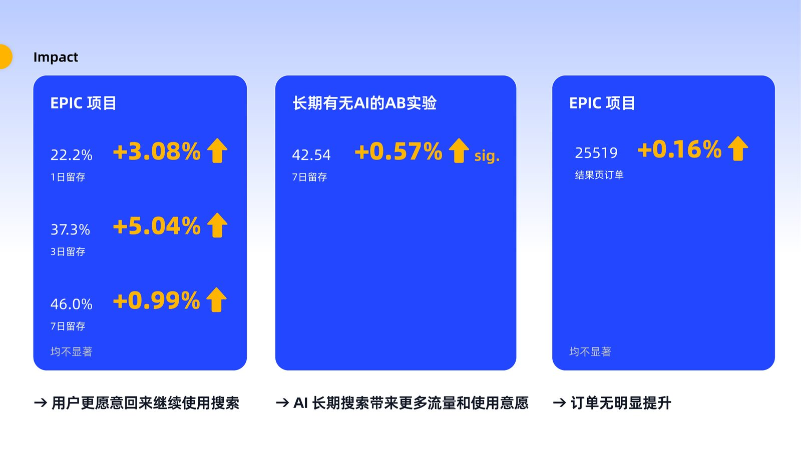
Reported as measured, including the parts that didn’t move. Internal deck slide.
Completeness is what earns the second visit. The instinct to cap the answer for layout safety would have cost the only thing that made travelers come back.
Control is a feature, not a fix. Pause-on-touch started as damage repair for a decision I’d made and ended up being the piece of EPIC worth patenting. When AI holds the page, giving the page back on demand is the design.
A good answer is not a decision. EPIC read complicated sentences well. It sent people away satisfied and unbooked. That gap is where the next chapter started.
EPIC proved AI could help when intent was complex. Complexity wasn’t the only gap.
While EPIC was live, I went back to the conversion data looking for the next long sentence to solve. The worst-performing queries on the results page weren’t long at all. They were the shortest ones we had — broad interest words with real traffic, an order conversion of 2.53% against a 5.91% page average, and travelers rewriting their query twice as often as anywhere else.
“Skiing”One word. No destination, no dates, no budget — and no idea where to begin.
Chapter 01 · Explore Intelligent Content (EPIC)
01Why now
Search was good at structured intents — a destination, an attraction, a hotel. Then the shape of what travelers typed started to change: questions, constraints and whole travel tasks where a keyword used to be.
A whole task, handed to a search box.
The tools that taught travelers to ask this way.
Queries longer than seven words, as a share of all searches.
AI chat tools had changed how people ask, everywhere. We saw it on Trip.com in both directions — in what travelers typed, and in how fast that share was growing: up 24%.
Search was no longer only about finding existing results. It was becoming a place where travelers express and solve travel tasks.
02Where traditional Search broke
Traditional Search works when a query maps to a structured intent — DestinationAttractionHotelActivity. These aren’t that.
Three jobs · one shared failure
01Know
“What are the opening hours of Universal Studios Japan?”
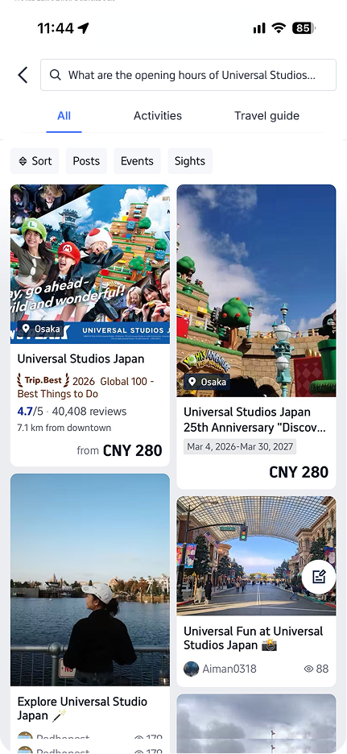
The opening time
Pages that mention the park
02Plan
“Tokyo 5-day 4-night itinerary, last day shopping”
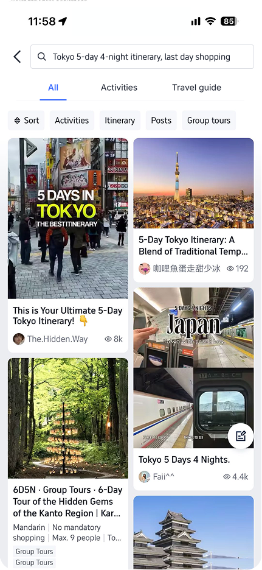
A usable plan
Hotels, tours and guides, unassembled
03Decide
“Where should I take my parents this summer?”
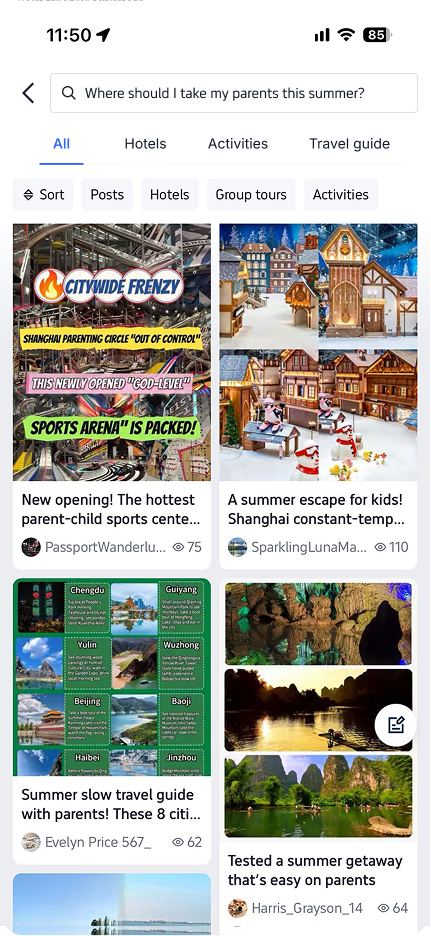
A few destinations, with reasons
Posts containing those words
Retrieval could only surface what already existed. LLMs brought two things it never had — intent understanding and generation: read the task behind the query, then write the thing that isn’t on any page.
03Defining AI’s role in Search
TripGenie had already shown AI could handle complex travel decisions. The question stopped being can AI answer this and became should it.
Travelers aren’t always looking for an answer. Often they want a choice, an action, a booking — and for those, an AI answer doesn’t reduce the effort. It adds a layer between the traveler and what they came for.
The answer has to match the task
A query is not the task. The same words can carry very different needs. Here is one query, answered two ways:
Search result
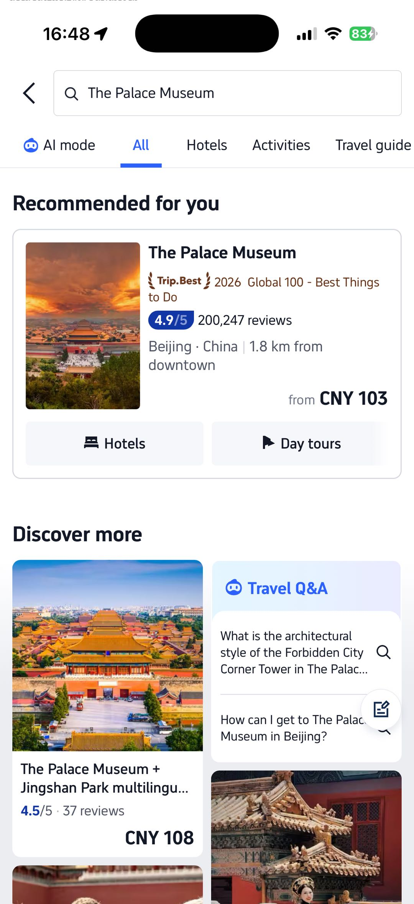
One entity, one intent, and the supply behind it. Eight in ten attraction-name searches end in browsing and booking.
Result → Browse → Book
AI answer
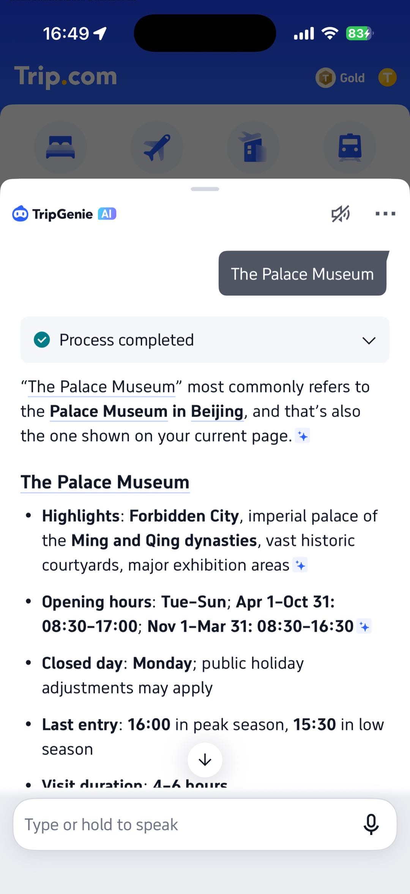
History, highlights, opening hours. Correct — and it turns a booking task into a reading task.
Answer → Read → Back to Search
The same holds across every structured intent — destination, attraction, hotel, A-to-B transport. Search resolves the query into supply and hands over the shortest path to action, because the framework behind it already maps the likely and the latent intent of these queries, tested and validated. A model answering from scratch has none of that.
The results page is already the shortest path to action. An answer laid on top of it costs a screen and returns nothing the traveler came for.
Four jobs behind the queries
Search returned something every time. The question was whether what came back was what the job needed.
The job
Search returns
AI returns
Who serves it
Book
“The Palace Museum” · “Universal Studios Japan”
Options to compare, priced and bookable
A description of the thing they already found.
Search
Know
“What are the opening hours of Universal Studios Japan?”
The POI, plus keyword-matched posts
The fact, pulled out of them and stated.
AI · answer extraction
Plan
“Tokyo 5-day 4-night itinerary, last day shopping”
Unassembled items
Every condition held at once, and one plan built from them.
AI · information synthesis
Decide
“Where should I take my parents this summer?”
Posts that share a word with the query
A few directions to choose between, each with a reason.
AI · decision support
Search helps travelers find and act. AI helps them understand and decide. The work is knowing which one should lead.
I reframed this into a broader Search evolution proposal — a scope covering about one in five searches on the page — and brought it to leadership. The response was clear: one month, closed development, the comprehensive results page. That became EPIC — Explore Intelligent Content.
Everything after that was an argument about the design frame and the interactions it complicated — placement, length, control.
04Design thinking
AI improves the answer. Search protects immediacy — it is an efficiency scenario, and AI takes time.
In Search, the wait is part of the experience — and an AI-only page opens with a gap in it.
Query → Wait → Answer
For a search user, it’s a blank page — nothing to read, nowhere to tap. Five seconds of that isn’t a loading state. It’s when they leave.
Search
~500ms
AI
~5s
AI
~10s
Full track = 12.85s, the average dwell time on the results page, per search.
Keeping the results feed wouldn’t make generation faster. It would make the wait survivable. I built out three ways the page could be put together.
AI-only experience
AI overlay experience
Hybrid AI + Search experience
Decision criteria
Let AI solve complexity without sacrificing Search efficiency.
AI takes position one as the information-synthesis layer; the results feed stays completely intact underneath it. Search keeps immediate access, exploration and the paths to book — and it carries the five seconds before the answer exists.
After choosing the Hybrid AI + Search framework, the next question was how much space AI should take on the page. Two patterns emerged:
Fixed-height AI block
A capped container. Answers are truncated; the page never moves.
Adopted by Google · REDnotes · WeChat
Full answer expansion
The answer unfolds in place; the feed is pushed down as it writes.
Adopted by Quark · Baidu
Decision criteria
Let the answer finish.
At this stage, our first priority was to validate whether AI could truly close the information gap left by traditional Search.
A truncated answer would make it difficult for users to evaluate AI’s value. Therefore, we chose full expansion — allowing the answer to complete while keeping Search feeds visible during generation.
The trade-off: the page grows as AI writes.
This introduced a new interaction challenge: how can users stay in control when the experience is still evolving?
05Designing for user control
The hybrid framework solved one problem: AI could finally help travelers through complex decisions, and Search stayed available underneath it. But a new tension emerged — not every traveler wants the same thing.
Some travelers want AI to guide them. Some just want to browse. And even travelers who love AI don’t want AI to take over their journey.
How do we give AI a bigger role without taking control away from users?
AI is useful, but it isn’t always the first thing a traveler wants. For a complex query it provides the guidance. Mid-exploration, the same person would rather be browsing more options, comparing products, or scanning the feed. Forcing everyone through the AI answer creates friction for whoever didn’t need it yet.
AI should be available, never mandatory.
Solution — Make AI and Search switchable
Rather than picking one experience for everyone, the page lets the traveler decide what leads.
Stay with the answer
The module holds the top of the page and expands as it writes.
Swipe up to pin it
The answer condenses to a bar, and the screen belongs to the feed.
Common pattern Search → AI answer → done
EPIC Search ⇅ AI — reachable in both directions, at any moment
Most AI Search treats the answer as a terminus. Here it is one of two places to be: scroll down and the listings own the screen, scroll back up and the answer expands again. The choice stays open while they read — which a toggle could never do, because a toggle asks people to choose before they know what the answer says.
Giving people the choice solved the first problem and exposed the next one: AI was still generating. Unlike a traditional results page, this one was no longer finished when the traveler started reading it. Content kept arriving, height kept growing, and the thing they were looking at kept sliding down.
In the extreme case, AI generated faster than a person could scroll.
I watched a session where someone reached for a card and it moved 200 pixels before the tap landed. They tried twice, then left. The experience read as the AI owns this screen, not me — and that recording ended the argument internally.
AI output should be paced by the user, not by the model.
Solution — Make generation respond to the user
We changed which side yields. AI can keep thinking, but a user action always comes first: scrolling pauses generation, a finger on the page freezes the stream, and lifting it resumes exactly where it stopped. No button, no setting, no mode.
Generating → touch → page freezes → explore → release → resumes
Scrolling becomes the control. Every other product asks the traveler to press Pause, Stop or Cancel — to interrupt the AI in the AI’s own language. Here the ordinary act of reaching for something already says I want to look at this, and the system gets out of the way. The page stops fighting the user: AI generates, the traveler navigates.
It was the hardest piece to get built — it touched rendering, and the estimate came back as “this will interfere with both modules.” Winning it took prototyping the behaviour myself and sitting with the engineer until it was obvious. It became the core claim of an invention patent I filed as lead applicant, and was reused on later AI surfaces instead of being redesigned each time.
The tension
The principle
01
The same traveler needs different modes at different moments.
Preserve user choice.
02
AI keeps changing the page while it is being read.
Preserve user control.
Two framework decisions and two interaction principles produced V1.
It shipped on schedule — one month of closed development, with no reference pattern for most of it. What mattered in that month was less about frames than about keeping a direction intact while six people took turns arguing with it.
06Validation
Once it was live, the question stopped being whether AI could generate an answer, and became whether travelers actually consumed it — and what it did to the rest of the journey.
01Did users consume the answer?
02Did it make Search more useful?
Retention moved in the right direction across every window. At EPIC’s own sample size none of those moves cleared significance on their own — the longer-running AI-on / AI-off experiment is what confirmed the direction was real.
People came back. Across every retention window, more of them returned to Search than to the version without it — and the long-run experiment separated AI’s contribution from launch novelty. The effect held.
03Did better information translate into transaction?
No. Orders were flat.
I had built for this and it wasn’t enough. A good AI answer is a satisfying dead end — the traveler gets what they asked for and has no particular reason to keep going. Every place the answer named became a link into the product for it, and the follow-up questions underneath routed back into the feed rather than deeper into chat: the answer was built to end somewhere, not just to end. A month of data said it still mostly ended.
What EPIC actually changed
Search as the entry to a transaction → Search as where the trip gets decided
Flat orders are not a null result — they locate the value. EPIC does its work at the front of the trip, before there is anything to book. Retention is what that looks like in data: people came back to Search to think. Whether that thinking later becomes a booking is a question this surface was never positioned to answer.
Retention up across every window · travelers returning to Search for decisions, not only for prices · a patented interaction model reused on later AI surfaces · and a settled answer to what AI on Search is for.
Which moved the question from Should AI answer? to How much AI is enough?
07Iteration
From a fully expanded answer to a fixed-height experiment.
The value question was settled: a complete answer brought people back. That made a question askable that hadn’t been before — not whether AI belonged on the page, but how much of the page it should have. We had shipped the maximal version deliberately. Now we could see what it cost.
Three costs showed up in the post-launch data:
If the answer’s default height is capped while the full version stays one tap away, can we keep what brings travelers back and still put results in front of them sooner?
Cap the default height. Keep the whole answer one tap away.
Travelers reached the feed sooner and orders moved with it, without giving up the completeness that brought them back. The answer was never the thing to remove — only the amount of it you have to scroll past.
Completeness is what earns the second visit. The instinct to cap the answer for layout safety would have cost the only thing that made travelers come back.
Control is the design, not the patch. Pause-on-touch began as repair for a problem my own decision created, and became a principle: when AI holds the page, handing it back on demand is the design. It is the piece of EPIC worth patenting.
A good answer is not a decision. EPIC read complicated sentences well. It sent people away satisfied and unbooked. That gap is where the next chapter started.
EPIC proved AI could help when intent was complex. Complexity wasn’t the only gap.
While EPIC was live, I went back to the conversion data looking for the next long sentence to solve. The worst-performing queries on the results page weren’t long at all. They were the shortest ones we had — broad interest words with real traffic, an order conversion of 2.53% against a 5.91% page average, and travelers rewriting their query twice as often as anywhere else.
“Skiing”One word. No destination, no dates, no budget — and no idea where to begin.